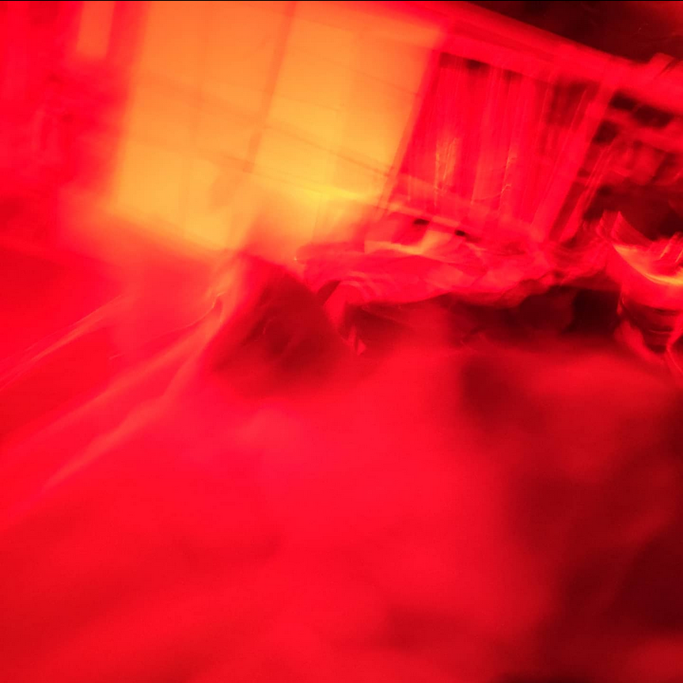
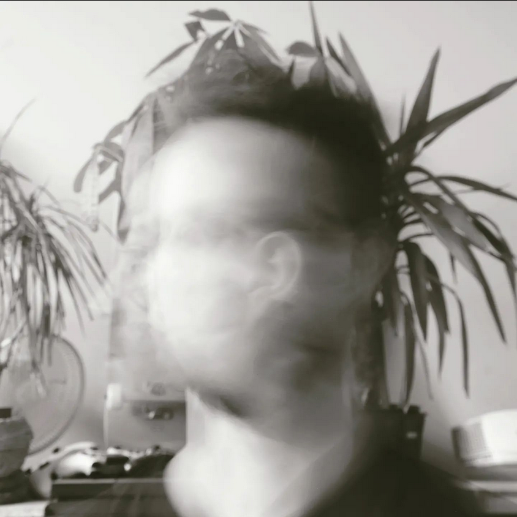
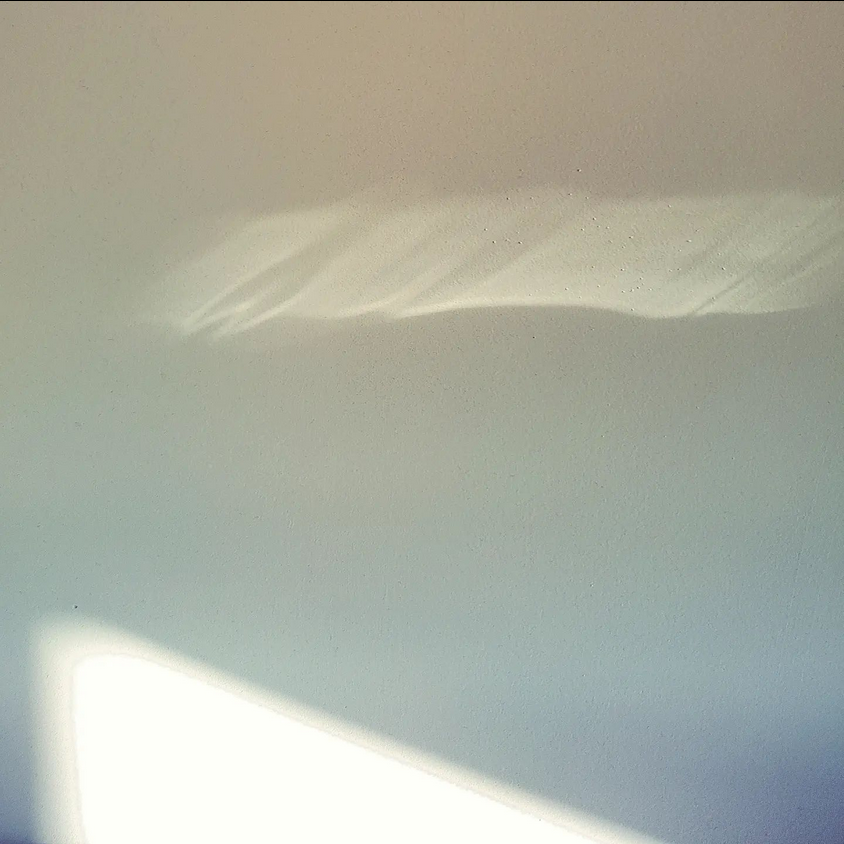
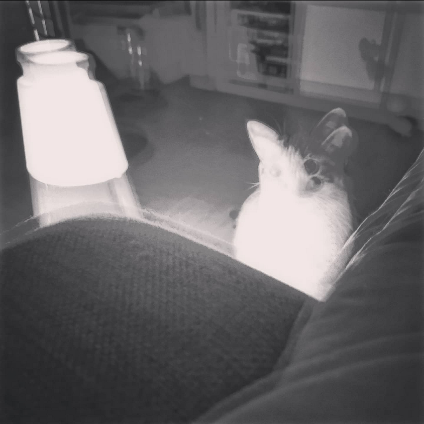
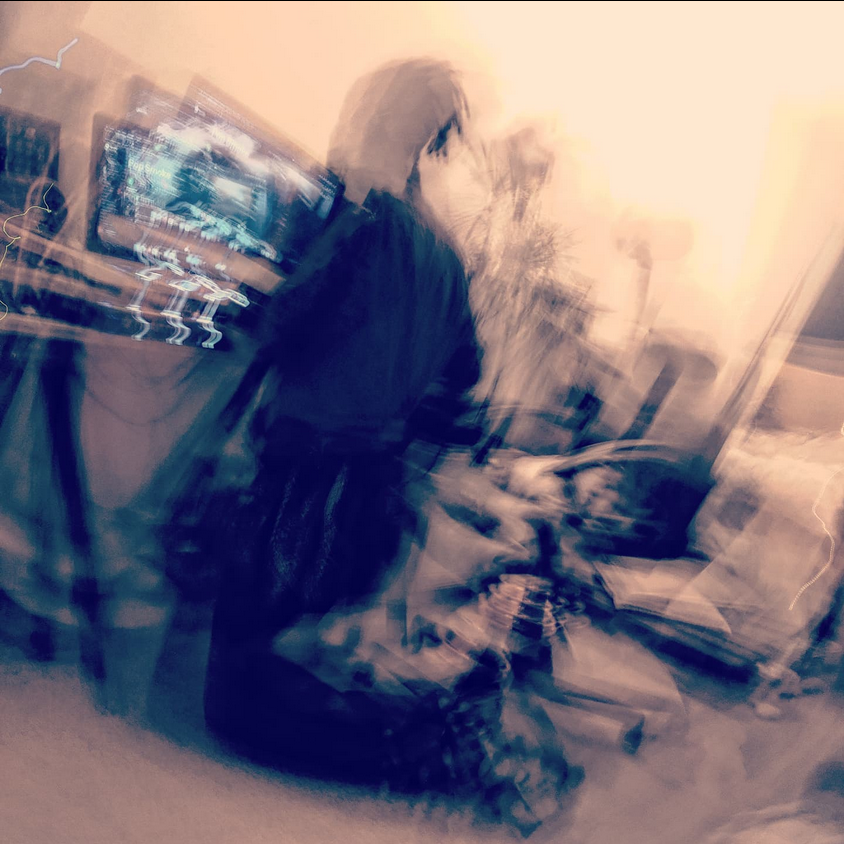

Flou autistique
Blurrypath est né de mon amour pour le mouvement et l'antinomie de
le figer dans le temps.
Touché par certaines photos que
beaucoup trouveraient ratées, j'ai décidé d'en faire le coeur de ce
projet.




